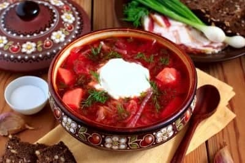
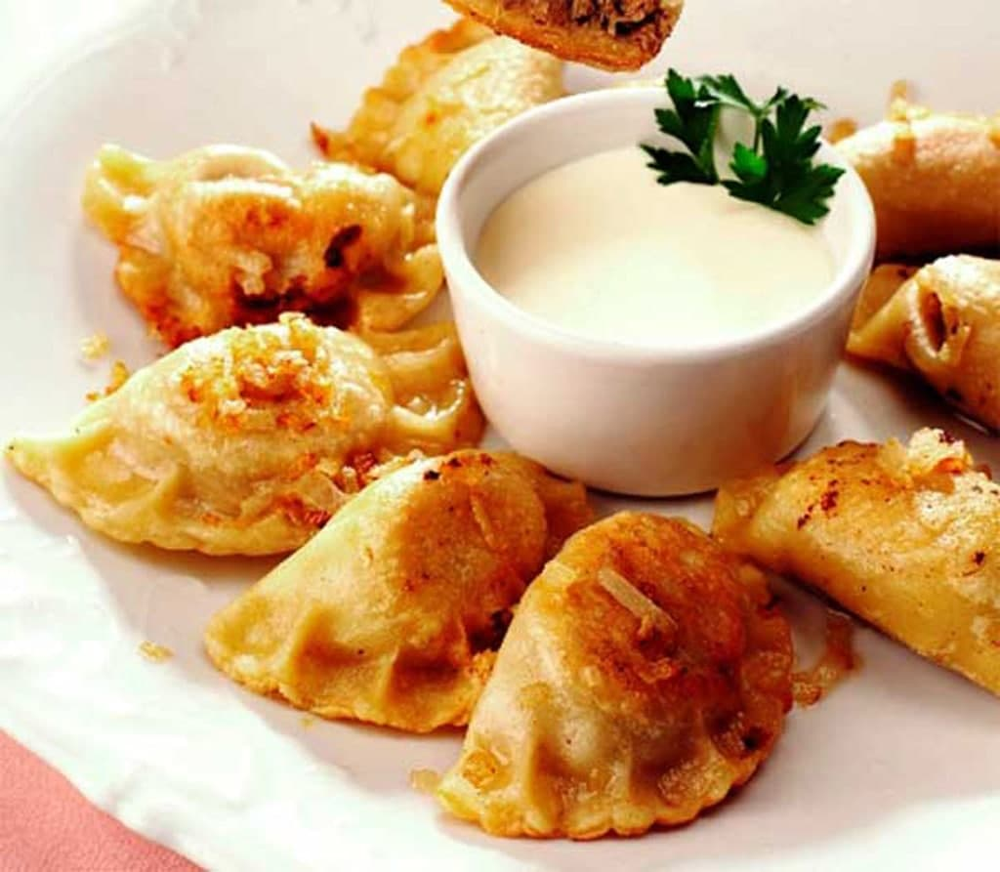
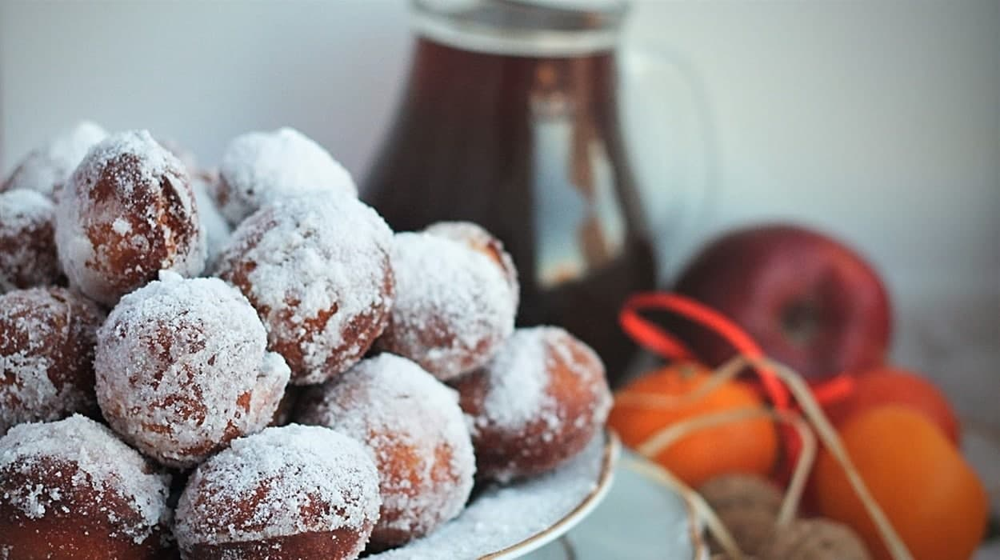

Борщ
Борщ – страва, яку назвуть найпершою, міркуючи про українську кухню.
Він опиниться у п’ятірці звичних страв як на Поліссі чи Слобожанщині, так і на Гуцульщині чи Півдні України. Попри те, що борщ є елементом повсякдення й одним із вагомих детермінантів української культури, варіантів його приготування – безліч, аж до того, що рецепти почасти суперечать один одному. Попри багатоголосся, борщ завжди залишається борщем – популярною і впізнаваною стравою.
Вареники
Вареники — одна з найпоширеніших страв з вареного тіста з начинкою. Остання могла бути пісною чи скоромною — залежно від християнського календаря. Як начинку використовували сир, смажену капусту, варену товчену картоплю, мак, калину, вишні та інші ягоди, яблука, варені й товчені сухофрукти (сушину), варену квасолю, горохове пюре, пшоняну чи гречану кашу й навіть борошно. Борошняна начинка була типовою для Полтавщини та Південної Чернігівщини./p>
Пампухи
В Україні пампушки ( пампухи, пончики) асоціюються здебільшого з Різдвяними святами. Пісні пампухи на воді готують на Святвечір. Це одна з давніх традиційних страв української національної кухні. Але ця дріжджова випічка є і в багатьох інших країнах світу. Це польські «пачкі», австрійські «крапфен», американські «донатси», литовські «спургос», ізраїльські "суфганієти", бельгійські "берлінські кулі", німецькі "берлінери", тощо. Всі вони дуже схожі на українські пампухи.